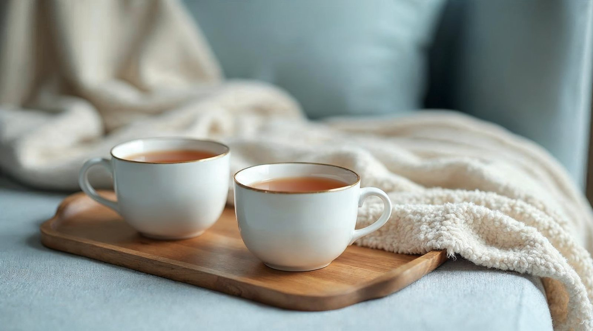
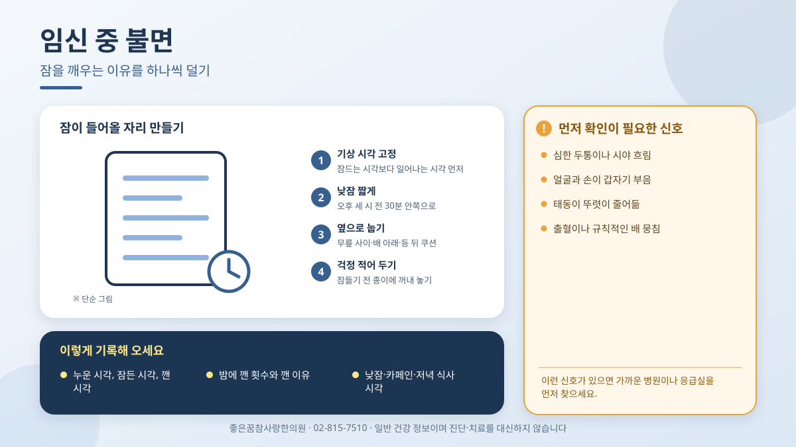

이종호 한의사 감수좋은꿈참사랑한의원 대표원장 (한의사 면허번호 19769)발행 2026-11-26 · 수정 2026-11-26
이 글의 차례
새벽 세 시, 또 눈이 떠집니다. 화장실을 다녀오고 나니 잠이 저만치 달아났습니다. 왼쪽으로 누웠다가 허리가 결려 오른쪽으로 돌아눕고, 다시 숨이 답답해 베개를 하나 더 받칩니다. 옆에서 곤히 자는 가족의 숨소리를 들으며 천장을 바라보다 보면, 아기를 낳고 나면 더 못 잔다는데 지금부터 이래서 어쩌나 하는 걱정이 밀려옵니다.
임신 중 잠 문제는 정말 많은 분이 겪습니다. 진료실에서 "임신하면 잠이 쏟아진다던데 저는 왜 이렇게 못 잘까요" 하고 묻는 분이 많습니다. 임신 초기에는 낮에 졸음이 쏟아지다가도, 중기와 후기로 갈수록 밤잠이 얕아지고 자주 깨는 경우가 흔합니다.
잠이 부족하면 낮에 피곤하고 예민해지며, 입덧이나 붓기, 허리 통증도 더 크게 느껴집니다. 그렇다고 잠을 못 자는 것 자체를 너무 걱정하면 그 걱정이 다시 잠을 쫓아냅니다. 잠을 흔드는 이유를 하나씩 찾아 덜어 내는 것이 먼저입니다.
이 글에서는 임신 중 잠이 왜 흔들리는지, 시기마다 무엇이 잠을 깨우는지, 잠자리에서 해 볼 수 있는 요령과 한의원에서 함께 살필 수 있는 부분을 차례로 정리했습니다.
왜 임신 중에는 잠이 얕아질까요?
임신 초기에는 프로게스테론이 크게 늘어 낮에 졸음이 쏟아집니다. 낮잠을 길게 자다 보면 밤에 오히려 잠이 오지 않고, 잦은 소변과 입덧 때문에 밤에 깨는 일이 생깁니다. 몸은 피곤한데 잠은 얕은 묘한 상태가 이어집니다.
임신 중기에는 비교적 잠이 편해지는 분이 많지만, 배가 불러 오면서 잠자리 자세가 불편해지기 시작합니다. 엎드려 자던 분은 자세를 바꿔야 하고, 허리와 골반이 결려 자주 뒤척이게 됩니다.
임신 후기에는 잠을 깨우는 이유가 한꺼번에 늘어납니다. 커진 자궁이 방광을 눌러 밤에 몇 번씩 화장실에 가고, 위를 밀어 올려 속쓰림이 생기며, 다리에 쥐가 나거나 저려서 깨기도 합니다. 아기의 태동이 밤에 활발해 잠이 깨는 분도 있고, 숨이 차서 누워 있기 힘든 분도 있습니다.
여기에 마음의 무게가 더해집니다. 출산에 대한 걱정, 아기의 건강, 일과 육아를 어떻게 이어 갈지에 대한 고민이 밤이 되면 더 크게 다가옵니다. 한의학에서는 임신 중 잠이 얕고 가슴이 두근거리며 마음이 불안한 상태를 몸의 진액과 기운이 아기 쪽으로 많이 쓰이면서 마음을 편히 붙잡아 두지 못하는 흐름으로 보기도 합니다.
무엇이 잠을 깨우는지 나눠 봅니다
잠들기가 어려운 경우
누워도 30분 넘게 잠이 오지 않는다면 낮잠이 길지 않았는지, 저녁에 휴대폰을 오래 보지 않았는지, 걱정거리가 머릿속을 맴돌지 않는지를 먼저 봅니다. 몸보다 머리가 깨어 있는 경우가 많습니다.
자주 깨는 경우
밤에 몇 번씩 깬다면 왜 깼는지를 적어 보시면 좋습니다. 화장실, 속쓰림, 다리 쥐, 허리 통증, 태동, 더위나 땀, 코막힘 가운데 어떤 이유인지에 따라 바꿔 볼 것이 달라집니다.
새벽에 일찍 깨서 다시 잠들지 못하는 경우
새벽에 깬 뒤 걱정이 꼬리를 물며 잠이 다시 오지 않는다면 마음의 긴장을 함께 살핍니다. 기분이 계속 가라앉고 즐거운 일이 없으며 눈물이 잦다면 잠의 문제를 넘어 마음을 돌봐야 할 때일 수 있어 산부인과에 함께 알려 주세요.
코골이와 숨이 막히는 느낌
임신 중에는 코 점막이 붓고 체중이 늘어 코골이가 새로 생기는 분이 있습니다. 자다가 숨이 막히는 느낌에 깨거나, 가족이 숨을 멈추는 것 같다고 말한다면 산부인과에 알려 확인을 받으시길 권합니다.
스스로 점검해 보세요
해당하는 줄에 표시해 두셨다가 진료 때 보여 주세요.
- 누워서 잠들기까지 30분 넘게 걸린다
- 밤에 세 번 넘게 깬다
- 낮잠을 한 시간 넘게 잔다
- 밤에 화장실 때문에 자주 깬다
- 속쓰림이나 다리 쥐 때문에 깬다
- 걱정이 많아 머릿속이 쉬지 않는다
- 낮에 너무 졸려 일상이 힘들다
먼저 이렇게 여쭙니다
임신 중 잠 문제로 오신 분께는 대략 이런 순서로 여쭙니다.
- 지금 임신 몇 주이고, 산부인과 다음 진료는 언제인가요?
- 잠드는 시각과 깨는 시각, 밤에 깨는 횟수는 어떤가요?
- 밤에 깨는 가장 큰 이유는 무엇인가요?
- 낮잠은 언제, 얼마나 주무시나요?
- 저녁 식사 시각과 잠들기 전 마시는 것은 무엇인가요?
- 속쓰림, 다리 쥐, 허리 통증, 코막힘이 있나요?
- 요즘 가장 마음에 걸리는 걱정은 무엇인가요?
밤에 땀이 나거나 몸이 화끈거려 이불을 걷어차는지도 여쭙니다. 임신 중에는 몸에 열이 많아지는 분이 있어, 침실 온도와 이불 두께만 바꿔도 깨는 횟수가 줄기도 합니다.
임신 전에 잠은 어땠는지도 여쭙니다. 원래 잠이 예민했던 분은 임신 중에 더 흔들리기 쉬워, 생활 리듬을 조금 더 꼼꼼하게 함께 짭니다.
일상에서 먼저 해 볼 수 있는 것
잠을 억지로 오게 할 수는 없지만, 잠이 들어올 자리를 만들어 줄 수는 있습니다. 하나씩 골라 시작해 보세요.
- 잠드는 시각보다 일어나는 시각을 먼저 일정하게 맞추기
- 낮잠은 오후 세 시 전에 30분 안쪽으로 줄이기
- 저녁 식사는 잠들기 세 시간 전에 마치고, 늦은 시간 물은 조금씩만
- 잠들기 한 시간 전에는 휴대폰과 밝은 화면 멀리하기
- 침실은 조금 서늘하게, 이불은 가볍게 해서 덥지 않게
- 누워서 20분 넘게 잠이 안 오면 잠시 일어나 어두운 곳에서 쉬었다가 다시 눕기
카페인은 임신 중 하루 양을 제한하도록 안내받으셨을 텐데, 잠이 얕다면 오후에는 아예 드시지 않는 편이 좋습니다. 커피뿐 아니라 녹차, 초콜릿, 콜라에도 카페인이 들어 있습니다.
잠자리 자세는 임신 중기 이후 옆으로 눕는 자세, 특히 왼쪽으로 눕는 자세를 많이 권합니다. 무릎 사이에 베개를 끼우고, 배 아래와 등 뒤에 쿠션을 받치면 허리와 골반이 한결 편해집니다. 긴 임산부 베개를 쓰는 분도 많습니다. 밤새 한 자세를 지켜야 한다고 걱정하실 필요는 없고, 깨어 보니 바로 누워 있다면 다시 옆으로 돌아누우면 됩니다.
속쓰림 때문에 깬다면 상체를 조금 높여 주세요. 베개 여러 개를 쌓기보다 등 아래부터 완만하게 높이는 편이 목에 부담이 덜합니다. 다리 쥐 때문에 깬다면 잠들기 전 종아리를 부드럽게 늘려 주는 스트레칭이 도움이 될 수 있습니다.
걱정이 많아 잠이 오지 않는다면 잠들기 전에 걱정을 종이에 적어 두는 방법을 권합니다. '내일 낮에 다시 생각하자' 하고 머리 밖으로 꺼내 두는 것입니다. 숨을 들이쉬는 것보다 내쉬는 것을 조금 길게 하는 호흡을 몇 분 해 보는 것도 마음을 가라앉히는 데 도움이 됩니다.
시기별로 이렇게 바꿔 보세요
임신 초기에는 낮에 졸음이 쏟아지는 것을 억지로 참기보다 짧게 쉬어 가는 편이 좋습니다. 다만 낮잠이 길어지면 밤잠이 흔들리니, 점심 뒤 20~30분 정도로 정해 두세요. 입덧으로 밤에 속이 비어 깨는 분은 머리맡에 크래커 같은 마른 간식을 두면 다시 잠들기가 수월합니다.
임신 중기에는 잠자리 자세를 미리 익혀 두기 좋은 때입니다. 배가 더 커지기 전에 옆으로 누워 무릎 사이에 베개를 끼우는 자세에 익숙해지면, 후기에 훨씬 편하게 잠들 수 있습니다. 이 시기에 걷기 습관을 만들어 두면 밤잠의 깊이에도 도움이 됩니다.
임신 후기에는 밤에 몇 번 깨는 것을 어느 정도 받아들이는 마음도 필요합니다. 깨지 않으려 애쓰기보다, 깬 뒤 다시 잠드는 시간을 줄이는 데 마음을 두세요. 화장실 가는 길에 밝은 불을 켜지 말고 작은 수면등을 켜 두면 잠이 덜 달아납니다. 저녁 일곱 시 이후에는 물을 조금씩만 드시고, 잠들기 직전 한 번 더 화장실을 다녀오세요.
낮 시간이 밤잠을 만듭니다
밤잠은 낮에 어떻게 지냈는지에 크게 좌우됩니다. 아침에 일어나면 커튼을 열고 햇빛을 쬐며 몸에 하루가 시작되었다는 신호를 주세요. 오전에 잠깐이라도 밖에 나가 걷는 시간은 밤에 잠이 들어오는 시각을 일정하게 잡아 줍니다.
오후 늦게 몸을 너무 많이 쓰거나, 잠들기 직전에 긴장되는 이야기를 나누면 몸과 머리가 늦게까지 깨어 있습니다. 저녁에는 조명을 조금 어둡게 하고, 따뜻한 물로 샤워한 뒤 가벼운 스트레칭으로 하루를 정리하는 순서를 만들어 보세요. 매일 같은 순서를 반복하면 몸이 그 순서를 잠의 신호로 기억합니다.
임신 중 수면제와 수면 보조제는 어떻게 하나요?
잠이 너무 힘들어 약을 생각하시는 분도 있습니다. 임신 중에는 약국에서 쉽게 살 수 있는 수면 보조제나 일부 감기약, 알레르기약에 들어 있는 성분도 상의가 필요합니다. 약을 드시기 전에는 산부인과에 먼저 여쭤 주세요.
이미 처방받아 드시는 약이 있다면 임신 사실을 알고도 혼자 끊지 마시고 처방한 의사와 먼저 상의하셔야 합니다. 잠과 관련된 약은 갑자기 끊으면 오히려 잠이 더 흔들릴 수 있습니다. 한의원에서도 드시는 약을 모두 확인한 뒤 진료 방향을 정합니다.

가족이 함께 도울 수 있는 것
임신 중 잠 문제는 혼자 해결하기 어려운 경우가 많습니다. 가족이 밤의 소음과 불빛을 줄여 주고, 늦게 들어오는 날에는 침실이 아닌 곳에서 준비를 마치는 작은 배려가 큰 도움이 됩니다.
잠들기 전 가족과 함께 오늘 하루 고마웠던 일 한 가지를 나누는 것도 좋습니다. 걱정으로 가득 찬 머릿속에 다른 이야기가 들어올 틈이 생기면서 마음이 한결 느슨해지는 것을 느끼실 수 있습니다.
새벽에 깼을 때 잠이 다시 오지 않아 힘들다면 아침에 조금 더 쉴 수 있도록 집안일을 나눠 맡아 주세요. 첫째 아이가 있다면 밤에 아이가 깨는 일을 가족이 대신 맡아 주는 것만으로도 임신부의 잠이 한결 지켜집니다.
함께 자는 가족의 코골이가 잠을 깨운다면 이 시기만큼은 잠자리를 잠시 나누는 것도 방법입니다. 서운한 일이 아니라 서로의 잠을 지키는 일이라고 생각해 주세요.
한의원에서 함께 살필 수 있는 경우
- 산부인과에서 다른 문제가 없다고 확인받았지만 잠이 얕고 자주 깨서 낮에 지치는 경우
- 잠과 함께 속쓰림, 다리 쥐, 허리 통증이 겹치는 경우
- 가슴이 두근거리고 마음이 불안해 잠들기 어려운 경우
- 손발이 화끈거리거나 땀이 나서 깨는 경우
좋은꿈참사랑한의원에 오시면 먼저 임신 주수와 산부인과 진료 내용, 드시는 약을 확인하고, 아래 '먼저 확인이 필요한' 신호가 없는지부터 봅니다. 그다음 편한 자세로 맥을 짚으며 잠의 모양과 밤에 깨는 이유, 소화와 대소변, 마음의 긴장을 함께 여쭙습니다.
진찰한 내용을 바탕으로 생활에서 바꿔 볼 것 하나와 함께 부드러운 관리, 침, 한약 상담 가운데 지금 주수와 상태에 맞는 것을 정합니다. 임신 중 한약과 침은 먼저 임신 사실을 알리고 산부인과와 상의한 뒤 신중하게 정하며, 임신 중 피해야 할 자리나 강한 자극은 쓰지 않습니다.
다시 오시면 지난번 뒤로 밤에 몇 번 깨셨는지, 그 이유가 무엇이었는지부터 이어서 여쭙습니다.
이렇게 기록해 오시면 상담이 쉬워집니다
일주일만 잠 기록을 남겨 보셔도 무엇이 잠을 깨우는지가 보이기 시작합니다.
- 날짜와 임신 주수
- 잠자리에 누운 시각과 잠든 것 같은 시각
- 밤에 깬 횟수와 깬 이유
- 아침에 일어난 시각과 개운한 정도(0~10)
- 낮잠 시각과 길이
- 저녁 식사 시각, 카페인을 드신 시각
- 걱정이 많았던 날 표시
기록을 하다 보면 오히려 잠에 더 신경 쓰게 될까 걱정하시는 분도 있습니다. 그럴 때는 아침에 일어나서 한 번에 적고, 밤에는 시계를 보지 않는 것을 권합니다.
아기를 기다리는 밤을 조금 덜 고단하게
임신 중 잠이 흔들리는 것은 몸이 출산을 준비하며 크게 바뀌고 있다는 뜻이기도 합니다. 완벽하게 자려고 애쓰기보다, 오늘 밤 한 번이라도 덜 깨는 것을 목표로 삼아 보세요. 낮에 짧게 쉬는 시간을 미안해하지 않으셔도 됩니다.
이번 주에는 일어나는 시각을 일정하게 맞추는 것 하나만 해 보세요. 다음에 오시면 그 일주일의 잠 기록부터 함께 펼쳐 보겠습니다.
이런 증상은 먼저 확인이 필요합니다
- 심한 두통이나 시야 흐림, 얼굴과 손이 갑자기 붓는 증상이 함께 오는 경우
- 태동이 평소보다 뚜렷이 줄었거나, 출혈 또는 규칙적인 배 뭉침이 있는 경우
이런 신호가 있으면 한의원보다 가까운 병원이나 응급실을 먼저 찾으세요.
함께 읽으면 좋은 글
- 임신 중이거나 임신 가능성이 있을 때는 한의원에 무엇을 알려야 하나요?
- 임신 중 허리와 골반, 치골이 아플 때는 무엇을 살피고 생활은 어떻게 하나요?
- 잠이 잘 오지 않을 때 한의원에서는 무엇을 먼저 살피나요?
- 걱정이 많아서 잠이 안 올 때는 어떻게 살피나요?
- 출산 뒤 우울감과 불안이 몇 주째 이어질 때(산후 우울)는 어떻게 살피나요?

여쭙는 것
- 지금 임신 몇 주이고, 산부인과 다음 진료는 언제인가요?
- 잠드는 시각과 깨는 시각, 밤에 깨는 횟수는 어떤가요?
- 밤에 깨는 가장 큰 이유는 무엇인가요?
생활에서 해 볼 것
- 잠드는 시각보다 일어나는 시각을 먼저 일정하게 맞추기
- 낮잠은 오후 세 시 전에 30분 안쪽으로 줄이기
- 저녁 식사는 잠들기 세 시간 전에 마치고, 늦은 시간 물은 조금씩만
한의원에서 함께 살필 것
- 산부인과에서 다른 문제가 없다고 확인받았지만 잠이 얕고 자주 깨서 낮에 지치는 경우
- 잠과 함께 속쓰림, 다리 쥐, 허리 통증이 겹치는 경우
- 가슴이 두근거리고 마음이 불안해 잠들기 어려운 경우
먼저 확인이 필요한 신호
- 심한 두통이나 시야 흐림, 얼굴과 손이 갑자기 붓는 증상이 함께 오는 경우
- 태동이 평소보다 뚜렷이 줄었거나, 출혈 또는 규칙적인 배 뭉침이 있는 경우
한눈에 보는 표
| 구분 | 핵심 |
|---|---|
| 여쭙는 것 | 지금 임신 몇 주이고, 산부인과 다음 진료는 언제인가요? 잠드는 시각과 깨는 시각, 밤에 깨는 횟수는 어떤가요? |
| 생활에서 해 볼 것 | 잠드는 시각보다 일어나는 시각을 먼저 일정하게 맞추기 낮잠은 오후 세 시 전에 30분 안쪽으로 줄이기 |
| 한의원에서 함께 살필 것 | 산부인과에서 다른 문제가 없다고 확인받았지만 잠이 얕고 자주 깨서 낮에 지치는 경우 잠과 함께 속쓰림, 다리 쥐, 허리 통증이 겹치는 경우 |
| 먼저 확인이 필요한 신호 | 심한 두통이나 시야 흐림, 얼굴과 손이 갑자기 붓는 증상이 함께 오는 경우 태동이 평소보다 뚜렷이 줄었거나, 출혈 또는 규칙적인 배 뭉침이 있는 경우 |
자주 묻는 질문
임신 중에 잠을 못 자면 아기에게 안 좋나요?
며칠 잠을 설쳤다고 해서 바로 아기에게 문제가 생기는 것은 아니라고 안내합니다. 다만 잠이 오래 부족하면 엄마 몸이 지치기 쉬우니, 잠을 흔드는 이유를 하나씩 덜어 가는 것이 좋습니다.
임신 중에 바로 누워 자면 안 되나요?
임신 중기 이후에는 옆으로 눕는 자세, 특히 왼쪽으로 눕는 자세를 많이 권합니다. 자다가 바로 누운 채로 깼다면 다시 옆으로 돌아누우시면 되고, 너무 걱정하지 않으셔도 됩니다.
임신 중에 수면제를 먹어도 되나요?
약국에서 파는 수면 보조제를 포함해 어떤 약이든 산부인과에 먼저 여쭤 주세요. 이미 드시는 약이 있다면 혼자 끊지 말고 처방한 의사와 상의하셔야 합니다.
임신 중 잠 문제에 한약을 먹어도 되나요?
임신 중 한약은 먼저 임신 사실과 주수를 알리고 산부인과와 상의한 뒤, 드시는 약과 영양제를 모두 확인하고 신중하게 정합니다.
출산하면 잠이 다시 좋아지나요?
출산 뒤에는 아기를 돌보느라 한동안 잠이 끊기는 경우가 많습니다. 임신 중에 만든 일정한 기상 시각과 짧은 낮잠 습관이 그 시기를 버티는 데 도움이 됩니다.
좋은꿈참사랑한의원은 재진 때 지난번 이야기부터 이어서 여쭙니다. 진료시간과 예약은 오시는 길에서 확인하세요.
어디서 상담받을 수 있나요?
좋은꿈참사랑한의원은 서울 동작구 만양로2길 2 신성빌딩 3층·5층(서울 동작구 상도동, 7호선 상도역 3번 출구 근처)에 있습니다. 한의사 3명(이종호 대표원장, 조영기 수석진료원장, 정원영 진료원장)이 진료합니다. 진료시간은 평일 09:30~20:00(점심 13:00~14:00), 토·일·공휴일 09:30~15:00이며, 방문 전 전화로 확인을 권합니다. 예약은 네이버 예약, 카카오톡 상담, 전화 02-815-7510로 받습니다.
이 글은 일반적인 건강 정보이며 개인의 진단이나 치료를 대신하지 않습니다. 증상이 있거나 복용 중인 약이 있다면 진료를 통해 확인하세요. 치료 효과는 개인마다 다를 수 있습니다.
작성 기준: 일반적으로 알려져 있는 건강 정보를 참고해 정리했습니다(대표원장 감수). 증상 기록은 1~2주 동안 하루 1회, 비슷한 시간에 적어 오시면 지난 상태와 비교하기 쉽습니다.